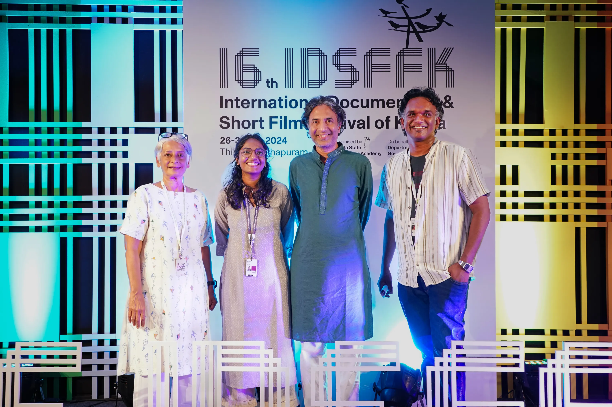
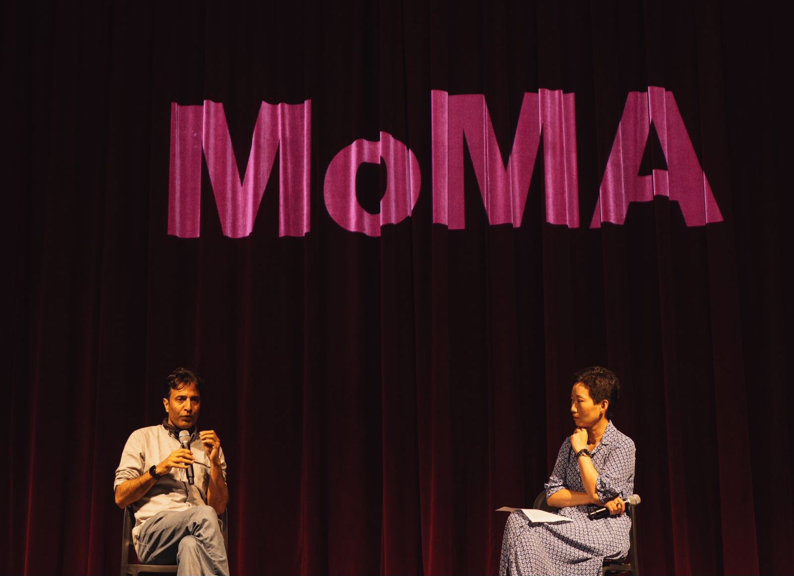
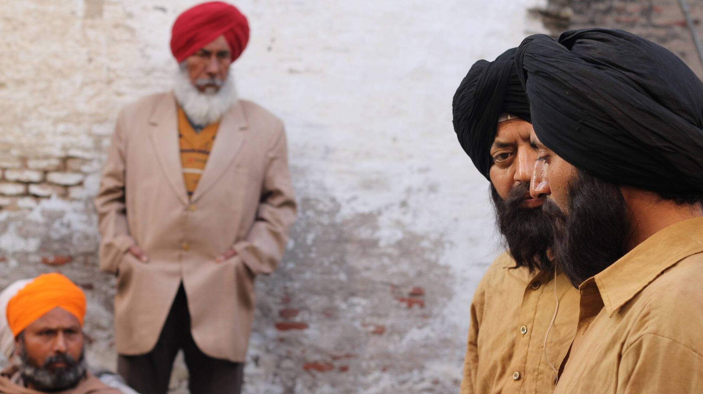
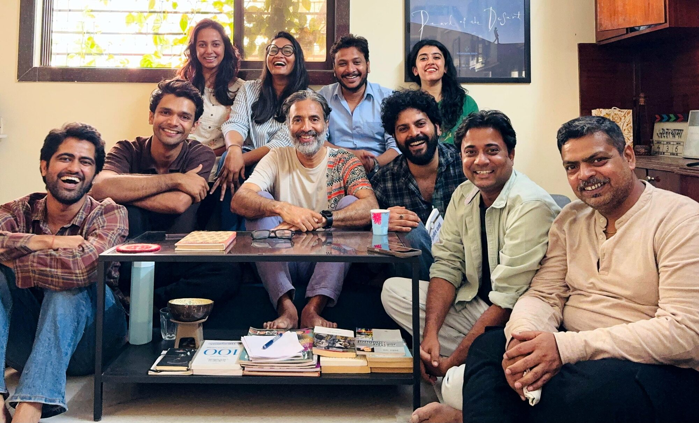
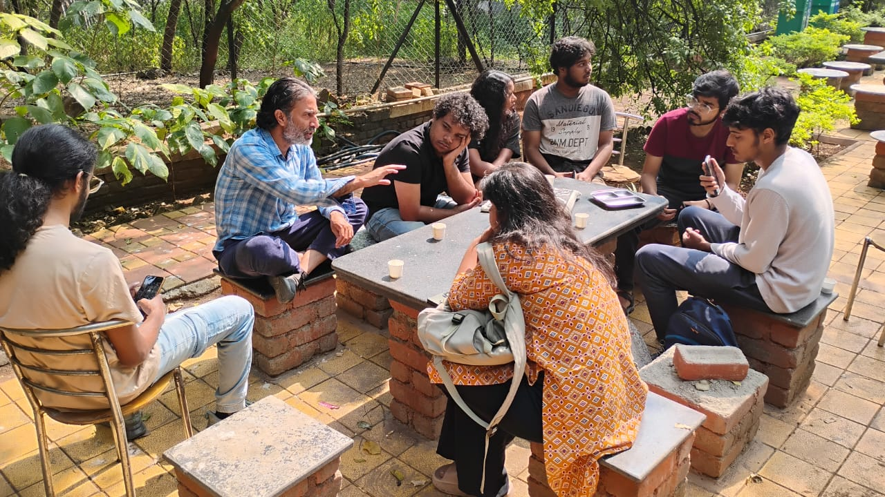
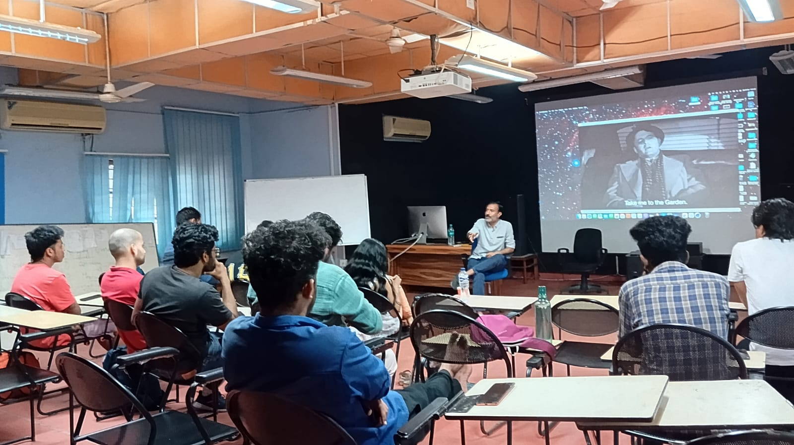

Pushpendra Singh — Founder, Subtext Performance Lab
Filmmaker. Actor. Teacher.
Pushpendra Singh founded Subtext Performance Lab with a single belief — that presence can be trained, like any craft.
What follows is not a résumé. It is the story of a life that has moved between making films, acting in them, and teaching others to do both — and how that movement became the actual source of the method.
Three distinct worlds. One continuous practice.
Pushpendra is an award-winning filmmaker whose work has premiered at some of the world's most prestigious festivals. His debut feature Lajwanti (2014) premiered at the Berlin International Film Festival. Ashwatthama (2017) won the Asian Cinema Fund and premiered in New Currents at the Busan International Film Festival. His creative documentary Pearl of the Desert (2019) screened in competition at the Mumbai Film Festival and at IDFA Amsterdam. His most recent feature, Laila Aur Satt Geet, premiered in the Encounters Competition at the Berlin International Film Festival in 2020, winning the NETPAC Award at Jeonju International Film Festival and Best Director at the Hong Kong International Film Festival. MoMA later curated a dedicated retrospective of his work as part of a season on Indian independent cinema.
He has served on juries at the International Documentary and Short Film Festival of Kerala, the Zabaikalsky International Film Festival in Russia and the Kashish Mumbai International Queer Film Festival, and on the selection jury for the NFDC Screenwriters Lab.

On the jury at the 16th International Documentary and Short Film Festival of Kerala (IDSFFK), 2024

Pushpendra in conversation with La Frances Hui of MoMA's Department of Film, following a screening of his film.
Subtext was a term Pushpendra had learned in training, the way most actors do — as theory. It was on the set of Qissa, standing in for Irrfan Khan, that he understood what it actually meant. He suggested a scene needed urgency. Irrfan's response stayed with him: keep the urgency outside, but inside, stay in full control. Slow down from within. It was the first time the idea of playing one thing inside and another outside stopped being a concept and became something he could feel. That distinction, lived rather than taught, became the foundation of everything Subtext Performance Lab does today.

BTS still of Irrfan Khan and Pushpendra Singh from Qissa, directed by Anup Singh. Photographed by Ankit Mehrotra.
In 2011, he was selected for Berlinale Talents — the first Indian actor ever invited to the programme. There, he trained in a workshop on embodying character with Jean-Louis Rodrigue, the movement coach who worked with Leonardo DiCaprio on J. Edgar; in a hands-on workshop on acting in close-up with Jasmila Žbanić — who won the Golden Bear at Berlinale in 2006 and was later Oscar-nominated for Quo Vadis, Aida? — focused entirely on reacting in front of the camera; and in a session on script analysis with Alby James OBE, who continues to serve as a mentor and selection-jury member for the programme.
On the workshop floor, he has shaped performances across some of Indian cinema's most distinctive productions — with Irrfan Khan, Golshifteh Farahani, Tillotama Shome, Sara Arjun, Tisca Chopra, Rasika Dugal, Vivek Gomber and Geetanjali Kulkarni — across films and series including Qissa, Song of the Scorpions, Sir, Stay, Class, Kohrra and the upcoming Don't Be Shy, produced by Alia Bhatt for Amazon Prime.

FTII acting graduates in a workshop on internalization and inner monologue, at Pushpendra's home.
Pushpendra served as Professor and Head of the Department of Screen Acting at the Film and Television Institute of India, Pune, and returned to making films. He continues to shape the next generation of Indian cinema as Visiting Faculty at FTII Pune, Satyajit Ray Film and Television Institute Kolkata, National Institute of Design Ahmedabad and Whistling Woods International Mumbai.
Before FTII, he worked with Imago Theatre and Imago Theatre-in-Education — Barry John's company, where the majority of his work with children took place — as well as Yellow Cat Theatre Company, founded by Sukhesh Arora, devising performances with children and with participants who were blind, deaf, non-verbal, or living with physical and neuromotor disabilities — an experience that gave his teaching its distinctly humane, inclusive and deeply sensitive foundation.

Leading a workshop on Directing Actors for FTII Film Direction students

Teaching at the Satyajit Ray Film and Television Institute (SRFTI), Kolkata
Pushpendra doesn't just teach you how to act.
He teaches you how to be.
From the Field
Pushpendra Singh knows that moments pass, & it is in their passing we make the choice to fold our grief in the concentrated buttoning of a shirt. Or we let it bloom in the tightening of lips. He knows that love can be both a caress on a wall as well as hands in the pocket. He is one of the few who can lead an actor away from the imitation of life to revelation of life. And if you want your performance to shatter all you believe about yourself & humanity, there is no better guide than him.
Anup Singh — Director
Qissa & Song of the Scorpions
Pushpendra Singh has been conducting Acting workshops for the senior Direction students of Whistling Woods International since quite a few years. His background as a trained actor, his strong directorial abilities and his in-depth understanding of cinema make these workshops a pivotal learning experience for the students. Through theoretical discussions and intense exercises, he guides each student towards making a film at the end of the workshop. In these films the students bring in their newly learnt understanding of acting as a craft.
Abhijit Mazumdar — Head of Department, Direction
Whistling Woods International
Selected Press